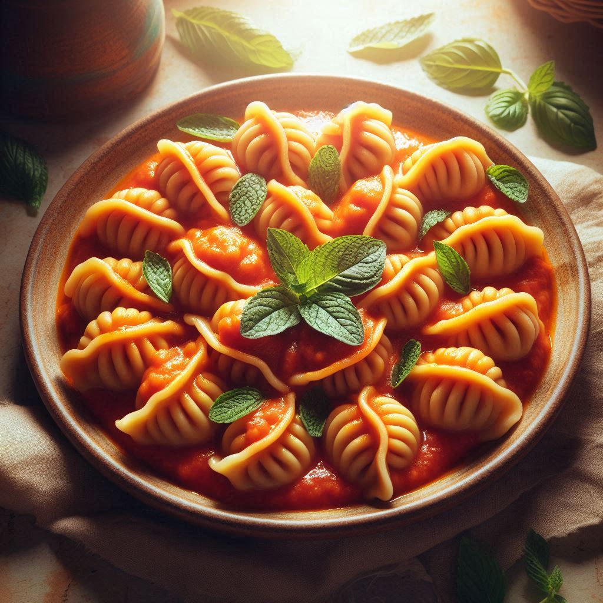

Culurgiones

Description
This is one of the most popularised dishes from the north of the island. Wheat dumplings filled with potato, mint and strong cheese.
Designer AI has done the classic dumb job that only AI 2026 can make, so they look like emaciated babies instead of culurgiones.
Nevermind, I'm still learning how to credit pictures online.
Ingredients
Pasta dough:
- 200g 00 flour
- 300g semola rimacinata
- 230g water
- 15g EVO
Filling:
- 1 kg yellow potatoes
- 65g EVO
- 17 mint leaves, chiffonade
- 100g pecorino sardo, grated
- 1 garlic clove, minced
- optional, 50g viscidu, if you can find it
- salt, to taste
Sauce:
- 500g passata
- 5 basil leaves
- 30g EVO
- 1 garlic clove, skin on
- salt, to taste
Method:
- Start by making a cold infusion of the EVO you are going to use in the sauce with the garlic clove. Day before is fine, but the longer the better. You're not going to fry the garlic much, are you?
- Place the potatoes in a large pan and cover with cold water. Bring to the boil and cook until the potatoes feel tender. Drain, peel, place in a bowl, then mash with a fork or masher while still hot
- Next, grate the garlic and add the EVO to the mashed potatoes. Add the grated pecorino, mint and a pinch of salt (especially if using viscidu, as it is quite sour) and stir (folding it, don't overwork the potato) to combine. Wrap with cling film and place in the fridge to cool for at least 1 hour
- Make a dough by combining the flour and the semola with water and oil. Knead until you have an elastic, smooth ball. Wrap it in cling film and allow it to rest for 30 minutes
- While the dough and filling are resting, prepare the sauce. Place the oil and the garlic you left to infuse in a medium saucepan set over a medium heat. Add the passata and 60ml water, cover and allow the sauce to cook for 30 minutes, stirring often. Off the fire, add the basil leaves and leave to infuse again. Taste and season
- Remove the filling from the fridge. Unwrap the dough and roll it out over a well-floured working surface to about 1mm thickness. (You can use a pasta machine, too.) Cut out 9cm rounds of dough. Place a knob of filling at the centre of each round, then pinch and fold the base to seal it on one side. Keep pinching and folding the extremities to seal the top of the dumpling, working as you would a braid, first on one side and then on the other, until you’ve reached the other side. Place the finished culurgiones on a floured tray while you work. Remember, it is better to overfill them!
- Bring a large pan of salted water to a rolling boil. Working in batches, cook the culurgiones in batches for 4 minutes, or for 2 minutes from when the come back afloat. Drain them, then place on warmed-up plates over a bed of tomato sauce. Let them rest in the sauce for a moment.
Buon Appetito!
Home Page